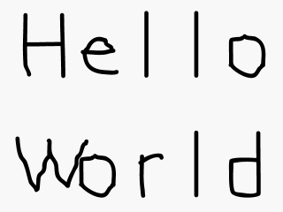

本节课将教你如何建立SDL风格的Hello World程序。既然你已经配置好了SDL， 是时候来建立一个能加载并显示一张图片的基本图形程序了。
//将SDL函数和数据类型包含进来 #include "SDL/SDL.h"
在源文件顶部，我们包含了SDL的头文件，以使用SDL的函数和数据类型。
记住这一点：你们中的有些人（比如Visual Studio用户）需要以下面这种方式包含SDL的头文件：
记住这一点：你们中的有些人（比如Visual Studio用户）需要以下面这种方式包含SDL的头文件：
#include "SDL.h"
int main( int argc, char* args[] )
{
//声明表面
SDL_Surface* hello = NULL;
SDL_Surface* screen = NULL;
在main函数的顶部，我们声明了两个SDL_Surface类型的指针。一个SDL_Surface是一张图像，在这个程序里，我们要处理两张图像。表面（Surface）"hello"是我们即将加载并显示的图片，表面“screen”是屏幕上可见的窗口。
每当使用指针时，你都得记着将它们初始化。
另外，在使用SDL时，你必须让你的main函数像上面那样声明，你不能用
每当使用指针时，你都得记着将它们初始化。
另外，在使用SDL时，你必须让你的main函数像上面那样声明，你不能用
void main()或者任何其他类似方式 //启动SDL
SDL_Init( SDL_INIT_EVERYTHING );
//设置窗口
screen = SDL_SetVideoMode( 640, 480, 32, SDL_SWSURFACE );
//加载图像
hello = SDL_LoadBMP( "hello.bmp" );
在main函数里我们首先调用的函数是
下面，调用
窗口建立好后，我们使用
SDL_Init()。调用这个函数能初始化SDL的所有子系统，然后我们可以开始使用SDL的图形函数。下面，调用
SDL_SetVideoMode() 是用来建立一个640像素宽、480像素高的32位（位/像素）窗口。其中最后一个参数SDL_SWSURFACE指定将表面存放在软件内存中。 该函数执行完毕后，返回了一个指向新建的窗口表面的指针，随后我们可以使用它。窗口建立好后，我们使用
SDL_LoadBMP()来加载图片。这个函数需要一个指向位图文件的路径作为参数，并返回一个指向加载好的表面的指针。如果在加载过程中发生了错误，这个函数会返回NULL。
//将图像应用到窗口上
SDL_BlitSurface( hello, NULL, screen, NULL );
//更新窗口
SDL_Flip( screen );
//暂停
SDL_Delay( 2000 );
既然我们已经建立好窗口并加载了图片，那么现在我们就想要把加载好的图像应用到窗口上。 我们通过
既然我们的图片已经应用到了窗口中，那么我们就需要更新一下窗口来让我们看到它。我们通过
既然图片已经应用到窗口上，并且能显示出来，那么我们还必须让这个窗口保持可见，以防止窗口瞬间闪烁一下然后消失。我们通过调用
SDL_BlitSurface()函数完成这件事。其中第一个参数是源表面，第三个参数是目的表面，它的功能是将源表面粘贴到目的表面上。 在这个程序里，它是将加载好的图像应用到窗口上。在后面的教程里，你将会了解其他参数的作用。既然我们的图片已经应用到了窗口中，那么我们就需要更新一下窗口来让我们看到它。我们通过
SDL_Flip()完成这个操作。如果你不调用这个函数，你将只能看到一个未更新的空窗口。既然图片已经应用到窗口上，并且能显示出来，那么我们还必须让这个窗口保持可见，以防止窗口瞬间闪烁一下然后消失。我们通过调用
SDL_Delay()让窗口停留一会儿。这里，我们让窗口延时2000毫秒（即2秒）。你将在第四课中学到更好的保持窗口可见的方法。 //释放已加载的图像
SDL_FreeSurface( hello );
//退出SDL
SDL_Quit();
return 0;
}
因为我们的程序里不再使用这张加载好的图片，所以我们需要将它从内存中移除。你不能仅仅使用
你可能想问为什么我们没有删除窗口表面。不用担心，
祝贺你！你已经完成了你的第一个图形程序！
delete，你必须使用SDL_FreeSurface()来从内存中移除图像。在程序的末尾，我们使用SDL_Quit() 来关闭SDL。你可能想问为什么我们没有删除窗口表面。不用担心，
SDL_Quit()会自动清除它的。祝贺你！你已经完成了你的第一个图形程序！
疑难解答
| 可能出现的问题 |
解决方法 |
| 编译器报错：找不到“SDL/SDL.h”。 |
这意味着你没有设置好SDL头文件，你的编译器或IDE会寻找SDL头文件，要确保它们是在SDL的include目录里找的。 |
| 使用Visual Studio编译时，编译器报错：“SDL/SDL.h”：没有这个文件或目录。 |
看一下代码顶部，确保写的是#include "SDL.h"。 |
| 编译成功，但连接器报错：找不到XXX文件。 |
确保你的编译器或IDE是在SDL的lib目录里寻找库文件。 |
| 编译成功，但连接器报错：未定义的引用：XXX函数名XXX。 |
确保你在连接器设置里连接了SDL的库。 |
| 编译成功，但连接器报错：入口点错误。 | 确保你的程序里仅有一个main函数，并且这个main函数是以正确的方式声明的。 |
| 生成成功，但在运行时报错：找不到SDL.dll。 |
确保已将SDL.dll与编译出来的exe放在同一目录下。Visual Studio用户则需要将SDL.dll与vcproj文件放在同一目录下。另外，Windows用户还可以将dll文件放到System32目录下。 |
| 生成成功，但运行时没有显示图形窗口或者窗口闪烁一下就消失，并且在程序目录下找到一个包含下列内容的stderr.txt文件： Fatal signal: Segmentation Fault (SDL Parachute Deployed) |
这是由于程序在试图访问不属于它自己的内存空间。其中一种可能是程序在执行SDL_BlitSurface()时试图访问NULL所指向的内存位置，这意味着图片加载出错，请确保图片文件和程序文件在同一个目录下。Visual Studio用户则需要将图片文件与vcproj文件放在同一目录下。 |
| 使用Visual Studio成功生成程序，但程序在运行时报错：The application failed to start because the application configuration is incorrect. Reinstalling the application may fix this problem |
这是因为你没有为你的编译器或IDE安装最新的补丁或升级包，这会导致SDL无法与Visual Studio配合使用。 |
| 一些Linux用户运行程序时，窗口是空白的。 |
尝试从控制台运行程序 |
如果你要新建一个工程来编译SDL程序，记得为每个SDL程序都新建一个工程。然而，更好的方法是，每次重用你一开始新建的SDL工程。
译者注：这可能指的是使用模板工程，先建立一个十分简单的SDL工程，做好包含目录、库目录及连接器设置，具体代码就可以像本课中的代码一样简单，以后新建工程时可以复制此工程，直接修改实际代码，这可以省去前面繁琐的设置操作。